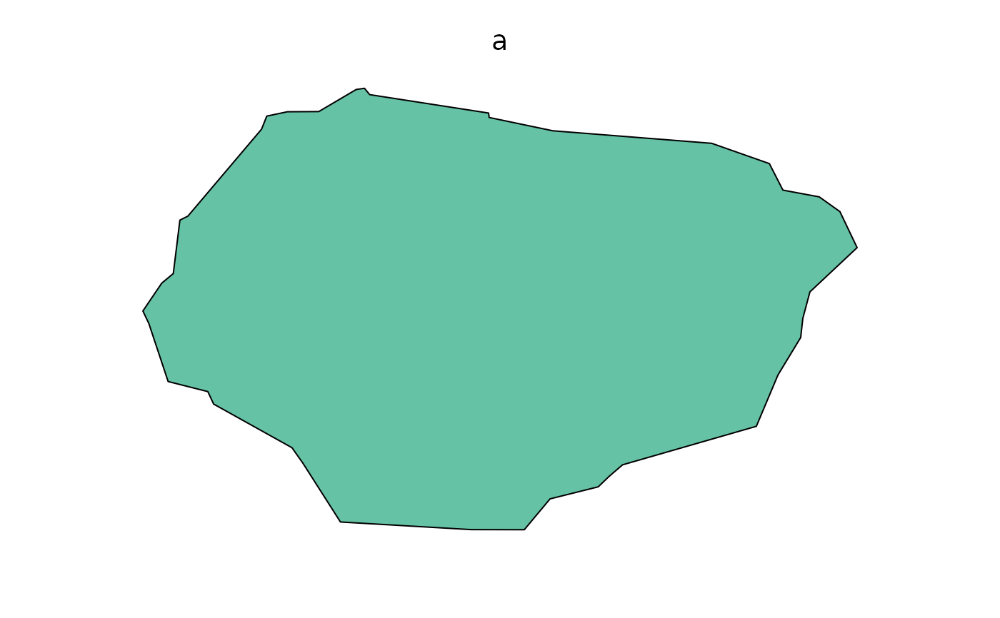
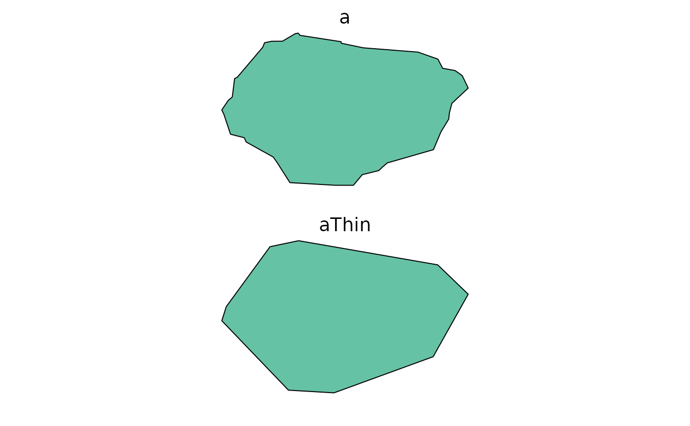

For visualizing, it is sometimes useful to remove points in Spatial* objects.
This will change the geometry, so it is not recommended for computation.
This is similar to rgeos::gSimplify and sf::st_simplify,
but faster than both (see examples) for large shapefiles, particularly if
returnDataFrame is TRUE.
thin will not attempt to preserve topology.
It is strictly for making smaller polygons for the (likely) purpose of visualizing more quickly.
thin(x, tolerance, returnDataFrame, minCoordsToThin, ...)
# S3 method for SpatialPolygons
thin(
x,
tolerance = NULL,
returnDataFrame = FALSE,
minCoordsToThin = 0,
maxNumPolygons = getOption("quickPlot.maxNumPolygons", 3000),
...
)
# S3 method for default
thin(x, tolerance, returnDataFrame, minCoordsToThin, ...)A Spatial* object
Maximum allowable distance for a point to be removed.
If TRUE, this will return a list of 3 elements,
xyOrd, hole, and idLength.
If FALSE (default), it will return a SpatialPolygons object.
If the number of coordinates is smaller than this number,
then thin will just pass through, though it will take the time required to
calculate how many points there are (which is not NROW(coordinates(x)) for
a SpatialPolygon)
Passed to methods (e.g., maxNumPolygons)
For speed, thin can also simply remove some of the
polygons. This is likely only a reasonable thing to do if there are
a lot of polygons being plotted in a small space. Current default is
taken from options('quickPlot.maxNumPolygons'), with a message.
library(raster)
b <- SpatialPoints(cbind(-110, 59, 1000))
crs(b) <- sp::CRS("+init=epsg:4326")
crsObj <- CRS(paste0("+proj=tmerc +lat_0=0 +lon_0=-115 +k=0.9992 +x_0=500000 +y_0=0 ",
"+datum=NAD83 +units=m +no_defs +ellps=GRS80 +towgs84=0,0,0"))
# make a random polygon -- code adapted from SpaDES.tools::randomPolygon package:
areaM2 <- 1000 * 1e4 * 1.304 # rescale so mean area is close to hectares
b <- spTransform(b, crsObj)
radius <- sqrt(areaM2 / pi)
meanX <- mean(coordinates(b)[, 1]) - radius
meanY <- mean(coordinates(b)[, 2]) - radius
minX <- meanX - radius
maxX <- meanX + radius
minY <- meanY - radius
maxY <- meanY + radius
# Add random noise to polygon
xAdd <- round(runif(1, radius * 0.8, radius * 1.2))
yAdd <- round(runif(1, radius * 0.8, radius * 1.2))
nPoints <- 20
betaPar <- 0.6
X <- c(jitter(sort(rbeta(nPoints, betaPar, betaPar) * (maxX - minX) + minX)),
jitter(sort(rbeta(nPoints, betaPar, betaPar) * (maxX - minX) + minX, decreasing = TRUE)))
Y <- c(jitter(sort(rbeta(nPoints / 2, betaPar, betaPar) * (maxY - meanY) + meanY)),
jitter(sort(rbeta(nPoints, betaPar, betaPar) * (maxY - minY) + minY, decreasing = TRUE)),
jitter(sort(rbeta(nPoints / 2, betaPar, betaPar) * (meanY - minY) + minY)))
Sr1 <- Polygon(cbind(X + xAdd, Y + yAdd))
Srs1 <- Polygons(list(Sr1), "s1")
a <- SpatialPolygons(list(Srs1), 1L)
crs(a) <- crsObj
# end of making random polygon
clearPlot()
Plot(a)

NROW(a@polygons[[1]]@Polygons[[1]]@coords)
#> [1] 41
if (require(fastshp)) {
aThin <- quickPlot::thin(a, 200)
NROW(aThin@polygons[[1]]@Polygons[[1]]@coords) # fewer
Plot(aThin) # looks similar
}
#> Loading required package: fastshp
#>
#> Attaching package: ‘fastshp’
#> The following object is masked from ‘package:quickPlot’:
#>
#> thin
#> Some polygons have been simplified
#> Warning: CRS object has comment, which is lost in output; in tests, see
#> https://cran.r-project.org/web/packages/sp/vignettes/CRS_warnings.html

# compare -- if you have rgeos
# if (require("rgeos")) {
# aSimplify <- gSimplify(a, tol = 200)
# NROW(aSimplify@polygons[[1]]@Polygons[[1]]@coords) # fewer
# Plot(aSimplify)
# }
# compare -- if you have sf
# if (require("sf")) {
# aSF <- st_simplify(st_as_sf(a), dTolerance = 200)
# # convert to Spatial to see how many coordinates
# aSF2 <- as(aSF, "Spatial")
# NROW(aSF2@polygons[[1]]@Polygons[[1]]@coords) # fewer
# Plot(aSF)
# }
# thin is faster than rgeos::gSimplify and sf::st_simplify on large shapefiles
if (FALSE) {
# this involves downloading a 9 MB file
setwd(tempdir())
albertaEcozoneFiles <- c("Natural_Regions_Subregions_of_Alberta.dbf",
"Natural_Regions_Subregions_of_Alberta.lyr",
"Natural_Regions_Subregions_of_Alberta.prj",
"Natural_Regions_Subregions_of_Alberta.shp.xml",
"Natural_Regions_Subregions_of_Alberta.shx",
"natural_regions_subregions_of_alberta.zip",
"nsr2005_final_letter.jpg", "nsr2005_final_letter.pdf")
albertaEcozoneURL <- paste0("https://www.albertaparks.ca/media/429607/",
"natural_regions_subregions_of_alberta.zip")
albertaEcozoneFilename <- "Natural_Regions_Subregions_of_Alberta.shp"
zipFilename <- basename(albertaEcozoneURL)
download.file(albertaEcozoneURL, destfile = zipFilename)
unzip(zipFilename, junkpaths = TRUE)
a <- raster::shapefile(albertaEcozoneFilename)
# compare -- if you have rgeos and sf package
# if (require("sf")) {
# aSF <- st_as_sf(a)
# }
# if (require("rgeos") && require("sf")) {
# thin at 10m
microbenchmark::microbenchmark(times = 20
, thin(a, 10),
, thin(a, 10, returnDataFrame = TRUE) # much faster
# , gSimplify(a, 10),
# , st_simplify(aSF, dTolerance = 10))
)
# Unit: milliseconds
# expr min median max neval cld
# thin(a, 10) 989.812 1266.393 1479.879 6 a
# gSimplify(a, 10 ) 4020.349 4211.414 8881.535 6 b
# st_simplify(aSF, dTolerance = 10) 4087.343 4344.936 4910.299 6 b
#}
}